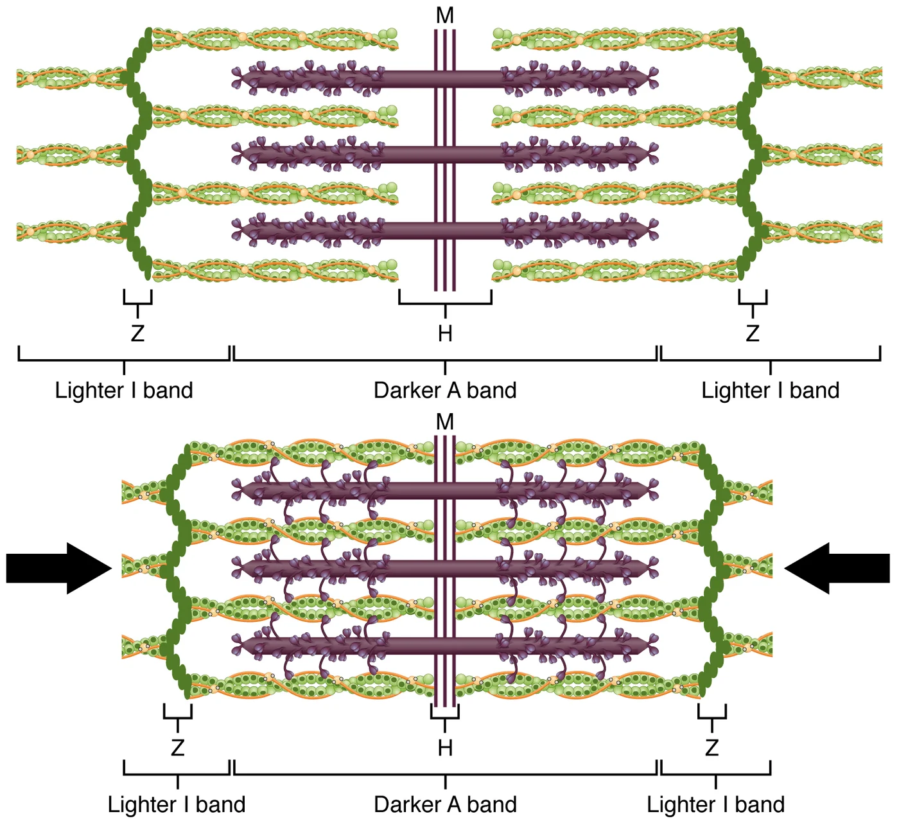

The Muscular System
TEAS objective S.1.6 · Human Anatomy & Physiology
What the TEAS expects: you can compare the three types of muscle tissue, explain how a skeletal muscle contracts, and describe how muscles produce movement.
1. Three types of muscle tissue
Swipe the table sideways to see every column. →
| Skeletal | Cardiac | Smooth | |
|---|---|---|---|
| Where | Attached to bones | Heart wall only | Walls of hollow organs and blood vessels (stomach, intestines, bladder, uterus, airways) |
| Control | Voluntary | Involuntary | Involuntary |
| Striations (stripes) | Yes | Yes | No |
| Cell shape | Long, cylindrical, many nuclei | Branched, usually one nucleus, joined by intercalated discs | Spindle-shaped, one nucleus |
Why cardiac cells have intercalated discs: they link the cells electrically and mechanically so the whole heart contracts as a unit.
Check 1: Which muscle type is involuntary and striated? Answer at the bottom of the page.
2. How a skeletal muscle is built
From large to small: muscle → fascicles (bundles) → muscle fibers (cells) → myofibrils → sarcomeres.
The sarcomere is the unit that contracts. It contains two kinds of protein filaments:
- Thin filaments (actin), anchored to the Z discs at each end of the sarcomere.
- Thick filaments (myosin), in the middle, with heads that can grab actin.
3. How contraction works: the sliding filament model
- A motor neuron releases acetylcholine at the neuromuscular junction, which triggers an electrical signal in the muscle fiber.
- The signal causes calcium to be released from the sarcoplasmic reticulum (the fiber's internal calcium store).
- Calcium binds troponin, which moves tropomyosin out of the way and exposes binding sites on actin.
- Myosin heads attach to actin (cross-bridges), pull the thin filaments toward the center, release, and reattach. Each cycle uses ATP.
- The sarcomere shortens. The filaments themselves do not get shorter; they slide past each other, and the Z discs move closer together.
- When the nerve signal stops, acetylcholine is broken down (by acetylcholinesterase), calcium is pumped back into the sarcoplasmic reticulum, tropomyosin covers actin again, and the muscle relaxes.
Why ATP matters: it powers the myosin stroke and is needed to release myosin from actin. Without ATP after death, myosin stays stuck to actin; that is rigor mortis.

Tap or click the figure to open it full size.
Check 2: If calcium could not be released inside a muscle fiber, what would happen when the nerve fired? Answer at the bottom.
4. Producing movement
- Muscles only pull; they never push. So they work in pairs.
- The agonist (prime mover) does the movement; the antagonist does the opposite movement. Example: the biceps flexes (bends) the elbow; the triceps extends (straightens) it.
- Tendons attach muscle to bone. (Ligaments attach bone to bone.)
- The origin is the attachment that stays still; the insertion is the attachment on the bone that moves.
- Movement words: flexion (decreases the joint angle) versus extension (increases it); abduction (moves away from the midline) versus adduction (moves toward it); rotation.
- A motor unit is one motor neuron plus all the fibers it controls; recruiting more units produces more force. In isotonic contraction the muscle changes length and moves a load; in isometric contraction tension rises but length does not change (holding a plank).
Other jobs of muscle: maintaining posture, stabilizing joints, and generating heat (shivering).
Common traps
- Saying the filaments shorten. They slide; their length stays the same.
- Saying calcium binds myosin. Calcium binds troponin.
- Mixing up tendons and ligaments. Tendon = muscle to bone; ligament = bone to bone.
- Calling smooth muscle striated. It has no stripes.
Learn it properly
- Skeletal muscle structure: OpenStax Anatomy and Physiology 2e, Section 10.2 Skeletal Muscle: OpenStax (opens in a new tab)
- Contraction and relaxation: Section 10.3 Muscle Fiber Contraction and Relaxation: OpenStax (opens in a new tab)
- Cardiac and smooth muscle: Section 10.7 Cardiac Muscle Tissue: OpenStax (opens in a new tab) and Section 10.8 Smooth Muscle: OpenStax (opens in a new tab)
Check answers
- Cardiac muscle.
- No contraction. Without calcium, troponin and tropomyosin keep actin's binding sites covered, so myosin cannot attach.
ESCC TEAS Prep · Original study material written for Eastern Shore Community College. Figures from OpenStax, Anatomy and Physiology 2e, licensed CC BY 4.0.